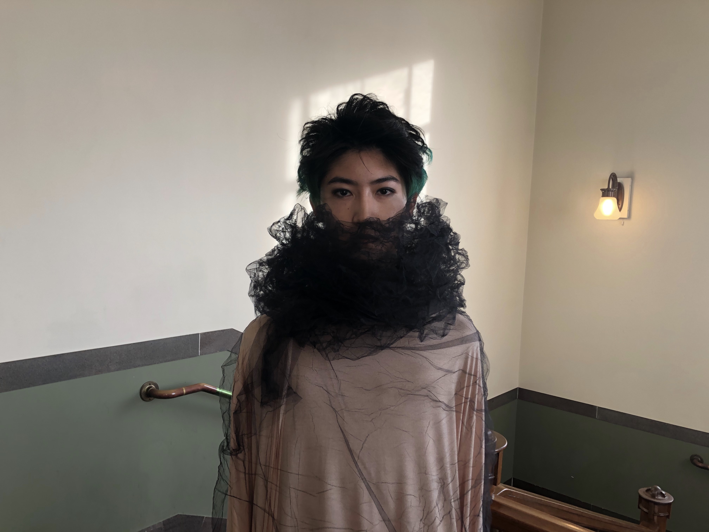
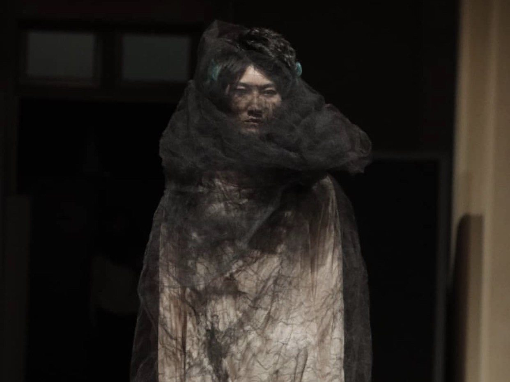
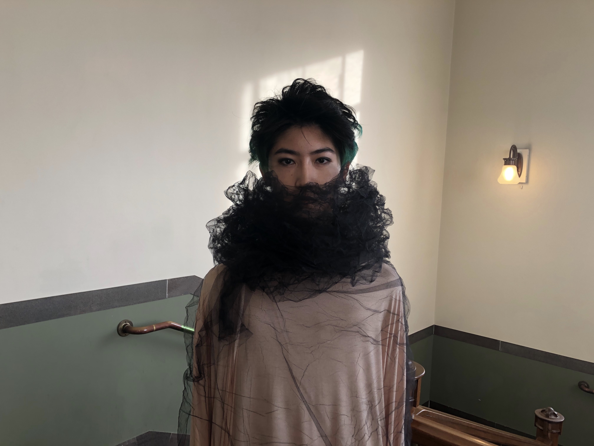
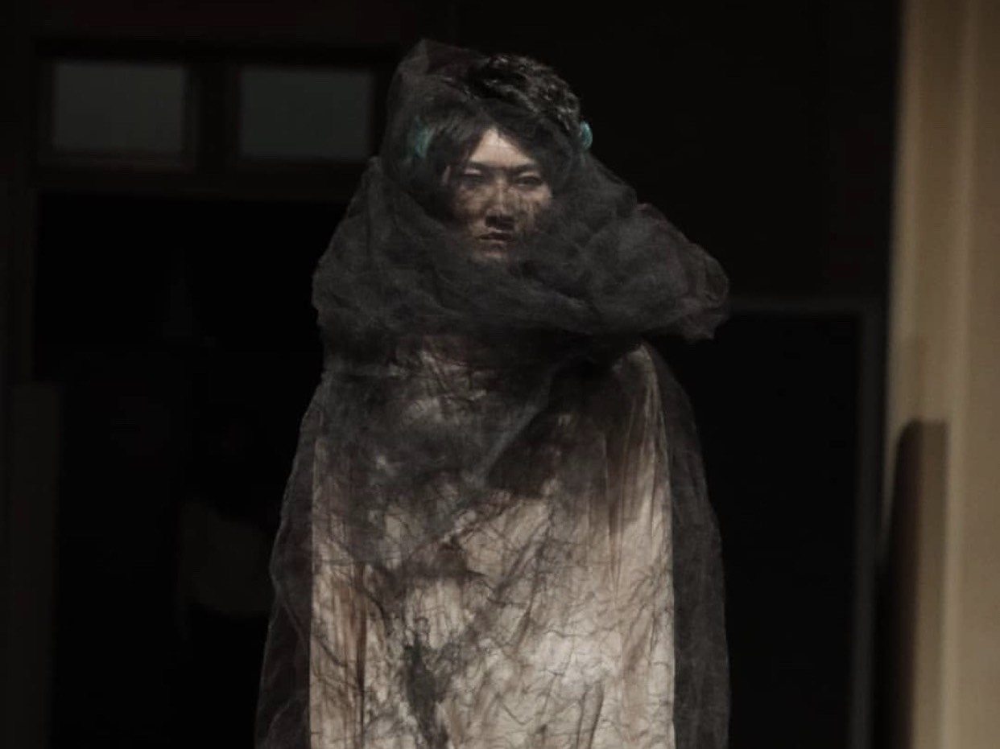

introduction


 




N高等学校に在学中の高校1年生
現在はプログラミング(主にフロントエンド)や基本情報技術者等の資格勉強をしている。
また、子ども食堂のボランティアへの参加や
クリエイタスマガジンコレクションにモデルとして出演するなど多方面で活動中。
| [Name] | 石橋 勇舞 |
|---|---|
| [From] | 大阪府 |
| [Hobby] | サイクリング/服探し/モデル |
| [Qualification] | ITパスポート, 英検3級 |
Skills

主にHTML,CSS,JSを使用してのサイトフロントエンド部分作成や、Adobe XDなどを使用してのデザイン作成ができます。
Creation

プロジェクトN 1~2月 推しスポット紹介サイト -Google site, Adobe Xd
主にデザインを担当
プロジェクトN 11~12月 ヘルスケアゲーム
ファシリテーターを担当

(左)電卓アプリ 一言掲示板アプリ(右) 作成
- swift5
Personal activity
ショーモデル
2019.12.23.
大阪中央公会堂で開催されたCREATOUS MAGAZINE COLLECTIONにモデルとして出演させていただきました。
(写真右から3番目)
4月にはOSAKA STREET COLLECTIONの協賛ステージに出演が内定するなど、意欲的に活動しています。
Contact